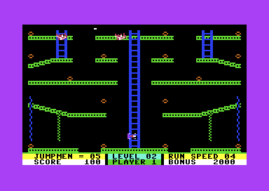

<meta charset="utf-8">
<meta name="viewport" content="width=device-width, initial-scale=1">
<title>{{title}}</title>
<link rel="preconnect" href="https://fonts.googleapis.com">
<link rel="stylesheet" href="https://fonts.googleapis.com/css2?family=Lato:wght@400;700;900&family=IBM+Plex+Mono:wght@400;500&display=swap">
<link rel="stylesheet" href="reference/jj-page.css">
<!-- tabs -->
<header class="hero">
  <p class="eyebrow">{{platform}} · {{year}} · {{publisher}}</p>
  <h1>{{title}}</h1>
  <p class="sub">Defuse every bomb on the level and it is done. Jumpman finds his footing by looking at the colours under his feet, and a fall of more than two pixels kills him.</p>
</header>
<main class="wrap">
<section id="goal">
  <p class="fig">01 · The goal</p>
  <h2 class="t">Touch every bomb</h2>
  <p class="lede">A level ends when its last bomb is defused. There is no exit to reach and no time limit, only a bonus that shrinks while you play.</p>
  <figure class="overview-shot"><figcaption>Level 2, <a href="levels.html#l2">FIRE! FIRE!</a>, in play. The status bar shows the Jumpmen left, the level, the run speed, the score, the player, and the bonus.</figcaption></figure>
  <p>Jumpman defuses a bomb by touching it: <a href="source.html#A600"><code>bomb_check</code></a> sees orange inside his body and looks up the square he is in (<a href="levels.html#bombs">how bombs are found</a>). Each bomb scores 100 points. On some levels a bomb also <a href="levels.html#bombs">changes the level</a>, taking away a floor or adding a ladder.</p>
</section>

<section id="floor">
  <p class="fig">02 · The floor</p>
  <h2 class="t">The colours are the map</h2>
  <p class="lede">The game keeps no list of where the girders and ladders are. Every move begins by reading the bitmap's colours around Jumpman.</p>
  <p>Once a frame <a href="source.html#97A8"><code>probe_floor</code></a> collects two sets of colours: every colour inside the ten lines of Jumpman's body, and every colour in the line under his feet. <a href="source.html#A23A"><code>jumpman_task</code></a> decides what he can do from those two sets alone:</p>
  <div class="table-scroll" role="region" aria-label="What the colours mean" tabindex="0"><table class="t">
    <tr><th>Colour</th><th>Drawn as</th><th>What Jumpman does on it</th></tr>
    <tr><td>green (2)</td><td>girders, slopes, up ropes</td><td>walks left and right, 4 pixels a move; green inside his body lifts him 2 pixels, which is how he walks up a slope and climbs an up rope</td></tr>
    <tr><td>blue (3)</td><td>ladders, down ropes</td><td>climbs up and down 2 pixels a move, if he stands at one of the level's ladder positions; a down rope carries him down by itself</td></tr>
    <tr><td>orange (1)</td><td>bombs</td><td>defuses the bomb</td></tr>
    <tr><td>none</td><td>black</td><td>falls 2 pixels; if the next move finds nothing either, he dies</td></tr>
  </table></div>
  <p>The ladders need one thing besides colour. Up and down work only when his X is within a few pixels of one of eight ladder positions in the level's header (<a href="source.html#A306"><code>at_ladder</code></a>), and he is moved onto the ladder's line. Down ropes have six positions of their own, and he must be exactly on one (<a href="source.html#A375"><code>at_rope</code></a>). Level 3's <a href="levels.html#l3">moving ladders</a> are sprites, not colours: while Jumpman touches one, the level tells the floor probe to count it as blue.</p>
</section>

<section id="jump">
  <p class="fig">03 · Jumping</p>
  <h2 class="t">One jump, the same every time</h2>
  <p class="lede">Fire with the stick left or right jumps that way; fire with the stick up jumps straight up. A jump is 22 steps from a table, and it cannot be steered.</p>
  <div class="plate"><div class="row" id="jumpPick" role="group" aria-label="Jump"></div><canvas id="jumpCv" width="560" height="200" class="scr" role="img" aria-label="The path of a jump"></canvas>
    <p class="cap">The path from <a href="source.html#A494"><code>jump_path</code></a>, one dot a step, drawn on a grid of 4 pixels, from Jumpman's feet on the green bar: 22 steps that rise 2 lines for six steps, hold for three, and drop 2 lines for thirteen. A ringed dot is a step where he could land: from the eighth step on, <a href="source.html#A444"><code>jump_land</code></a> looks for a floor.</p></div>
  <p>Each step is one move at the <a href="#speed">run speed</a>. A sideways jump moves 4 pixels across on 13 of its steps, 52 pixels in all, and rises 12 lines before it falls. From the eighth step, green under him ends the jump; blue ends it only at a ladder or a down rope. After the 22nd step the jump simply stops, wherever he is, and the falling rule takes over: if there is no floor within 2 pixels, he dies. The whole path ends 14 lines below where it started, so a jump is safe only onto a floor no lower than that, give or take the one 2-pixel fall the rule allows.</p>
</section>

<section id="bullets">
  <p class="fig">04 · Bullets</p>
  <h2 class="t">Shots that turn when they see you</h2>
  <p class="lede">Bullets drift in from the edges, and the moment one is level with Jumpman, or straight above or below him, it turns and comes for him.</p>
  <p><a href="source.html#A0F1"><code>bullet_task</code></a> keeps as many bullets as the level's header allows, from none to three (<a href="levels.html#levels">by level</a>). A free sprite becomes a new bullet at a random point on the left edge, the top, or the right edge, drifting one of four ways chosen at random. When it lines up with Jumpman, it turns toward him once, with a sound, and keeps that course at 6 pixels a move across or 3 up and down. A bullet that leaves the playfield is freed for the next. Touching one kills him (<a href="source.html#9D47"><code>touch_check</code></a>). On <a href="levels.html#l7">level 7</a> the turned bullets weave as they come.</p>
</section>

<section id="death">
  <p class="fig">05 · Dying</p>
  <h2 class="t">A death takes a while</h2>
  <p class="lede">A Jumpman who is hit does not vanish. He tumbles down the level, bouncing off girders, until he drops off the bottom of the screen.</p>
  <p>When he is hit, <a href="source.html#A4C0"><code>death_task</code></a> gives him a random shape and drops him 2 pixels a move, with a note that sinks as he falls. Each time his body meets green he bounces left, right, or straight up at random, and falls again. Below line <code>$DE</code> he is dead: the death tune plays while he flickers, and a new Jumpman appears at the level's start with the level as he left it, every bomb he defused still gone (<a href="source.html#9BD5"><code>play_level</code></a>).</p>
</section>

<section id="speed">
  <p class="fig">06 · Run speed</p>
  <h2 class="t">Run speed slows the whole level</h2>
  <p class="lede">Each player picks a run speed from 1, the fastest, to 8 at the start. It sets how many frames pass between moves, for Jumpman and for everything that moves against him.</p>
  <div class="table-scroll" role="region" aria-label="Run speeds" tabindex="0"><table class="t" id="speedT"><thead><tr><th class="n">Run speed</th><th class="n">Frames a move</th><th class="n">Moves a second</th><th class="n">Walking, pixels a second</th></tr></thead><tbody></tbody></table></div>
  <p>The interrupt counts frames in <code>$0924</code> up to the run speed in <code>$09B6</code>, and when it gets there Jumpman moves (<a href="source.html#86F6"><code>$86F6</code></a>). Enemies count in <code>$0925</code> up to <code>$09B7</code>, and every new Jumpman sets that to the same run speed (<a href="source.html#9AFC"><code>$9AFC</code></a>), so a slow player gets slow bullets too. Run speed 9, which no player can choose, stops everything; the game uses it while it sets up a screen. On <a href="levels.html#l10">level 10</a> at speed 8, bullets cannot kill Jumpman at all.</p>
</section>

<section id="score">
  <p class="fig">07 · Score and Jumpmen</p>
  <h2 class="t">Four Jumpmen, a bonus clock, and 7,500 points a life</h2>
  <p class="lede">Each player starts with four Jumpmen in reserve besides the one in play, so the status bar reads JUMPMEN = 05.</p>
  <p>A player's record starts with 4 lives (<a href="source.html#996C"><code>player_init</code></a>), and the status bar shows lives plus one, counting the Jumpman in play. A new Jumpman comes every 7,500 points (<a href="source.html#9FCD"><code>score_check</code></a>).</p>
  <p>Each level starts with a time bonus from its header, 1,000 on level 1 and 1,500 to 2,500 on the others. Every 256 frames, about five seconds, <a href="source.html#881E"><code>bonus_tick</code></a> takes 100 off it, so level 1's bonus is gone after about 51 seconds. When the last bomb is defused, <a href="source.html#9BF7"><code>level_done</code></a> adds what is left of it, then 25 points times the level number for every Jumpman left, the one in play included: 25 each on level 1, 300 each on level 12 (<a href="source.html#9EA2"><code>level_bonus</code></a>).</p>
</section>

<section id="players">
  <p class="fig">08 · Players</p>
  <h2 class="t">Up to four players, one level at a time</h2>
  <p class="lede">With several players, each plays the same level in turn, and the next level comes when every player has finished it.</p>
  <p>Between turns <a href="source.html#9974"><code>next_turn</code></a> shows PLAYER #n GET READY! in the player's colour, then draws the level afresh from its header. A turn lasts until the player clears the level or loses the last Jumpman; a player with none left drops out, and when nobody is left the game starts again from the title. A score that makes the table of 20 goes in with three letters chosen with the stick (<a href="source.html#A710"><code>game_over</code></a>).</p>
</section>
</main>
<footer style="margin:16px 0 0;padding:22px var(--gx) 0;border-top:1px solid #e0ded8;font-family:'IBM Plex Mono',ui-monospace,Menlo,monospace;font-size:12px;color:#80838a"><a href="https://github.com/gamesexplained/gamesexplained" style="color:#1f5fa8;text-decoration:none">GitHub</a> · <a href="https://discord.gg/3V9GWyRDWV" style="color:#1f5fa8;text-decoration:none">Discord</a><br>© Games Explained contributors. Write-ups, facts and symbol maps are available under <a href="https://creativecommons.org/licenses/by-sa/4.0/" style="color:#1f5fa8;text-decoration:none">CC BY-SA 4.0</a>; code under <a href="https://opensource.org/licenses/MIT" style="color:#1f5fa8;text-decoration:none">MIT</a></footer>
<script src="../../lib/c64.js"></script>
<script src="reference/jj-page.js"></script>
<script>
(function () {
  const $ = id => document.getElementById(id);
  const tb = $('speedT').tBodies[0];
  for (let s = 1; s <= 8; s++) {
    const tr = tb.insertRow();
    [s, s, (50.12 / s).toFixed(1), (4 * 50.12 / s).toFixed(0)].forEach(v => { const td = tr.insertCell(); td.className = 'n'; td.textContent = String(v); });
  }
  JJ.load().then(L => {
    const ram = L.ram, cv = $('jumpCv'), g = cv.getContext('2d');
    // jump_path ($A494): 22 pairs, move across (4) or not (0), then the Y change (signed).
    function draw(dir) {
      const S = 4, ox = dir < 0 ? 440 : dir > 0 ? 120 : 280, oy = 70;
      g.fillStyle = '#000'; g.fillRect(0, 0, cv.width, cv.height);
      g.strokeStyle = '#222'; for (let x = 0; x < cv.width; x += 4 * S) { g.beginPath(); g.moveTo(x, 0); g.lineTo(x, cv.height); g.stroke(); }
      for (let y = oy % (4 * S); y < cv.height; y += 4 * S) { g.beginPath(); g.moveTo(0, y); g.lineTo(cv.width, y); g.stroke(); }
      g.fillStyle = C64.PAL[5]; g.fillRect(ox - 40, oy + 2, 80, 8);
      let x = 0, y = 0;
      g.fillStyle = '#fff'; g.beginPath(); g.arc(ox, oy, 4, 0, 7); g.fill();
      for (let k = 0; k < 22; k++) {
        const a = 0xA494 + 2 * k, dy = ram[a + 1] > 127 ? ram[a + 1] - 256 : ram[a + 1];
        y += dy; if (ram[a]) x += 4 * dir;
        const px = ox + x * S, py = oy + y * S;
        g.fillStyle = C64.PAL[7]; g.beginPath(); g.arc(px, py, 4, 0, 7); g.fill();
        if (k >= 7) { g.strokeStyle = '#fff'; g.lineWidth = 1.5; g.beginPath(); g.arc(px, py, 7, 0, 7); g.stroke(); g.lineWidth = 1; }
      }
    }
    for (const [t, d] of [['Fire with left', -1], ['Fire with up', 0], ['Fire with right', 1]]) {
      const b = document.createElement('button'); b.type = 'button'; b.className = 'b'; b.textContent = t;
      b.onclick = () => { for (const o of $('jumpPick').children) o.setAttribute('aria-pressed', String(o === b)); draw(d); };
      b.setAttribute('aria-pressed', String(d === 1));
      $('jumpPick').append(b);
    }
    draw(1);
  });
})();
</script>
